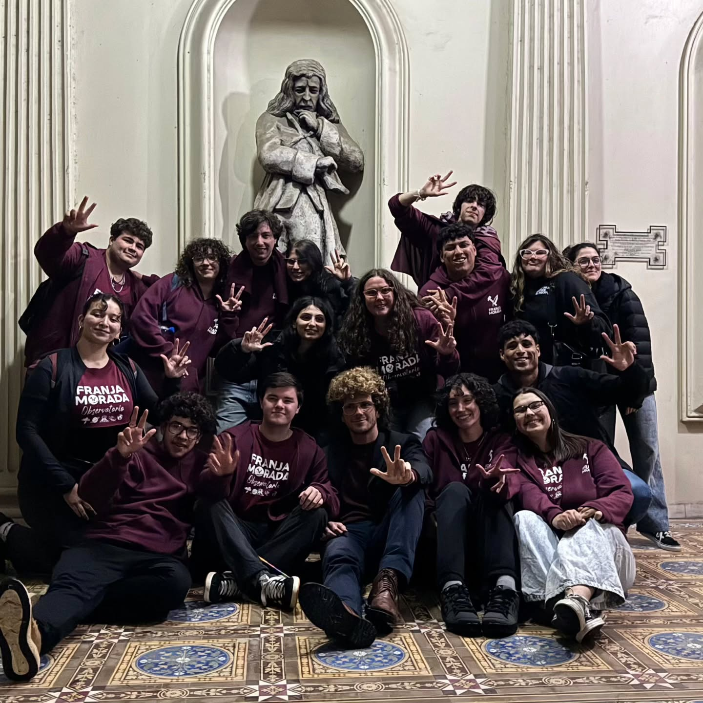
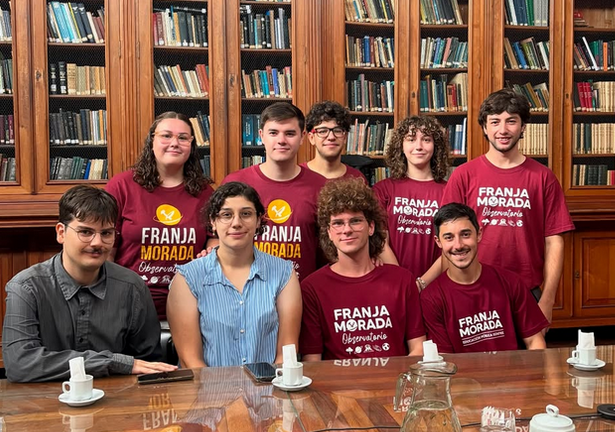

Universidad pública
Una universidad pública, inclusiva, justa y de excelencia, con acceso a la educación y oportunidades para estudiantes.
Nuestra identidad, nuestra historia y las ideas que defendemos en el Observatorio.
Nuestra identidad
Hace 9 años que representamos a estudiantes del Observatorio. Somos compañeros, amigos y, ante todo, estudiantes comprometidos con nuestra Facultad y con la Universidad Pública.
Somos una agrupación reformista e independiente de cualquier gobierno . Defendemos la autonomía universitaria y una UNLP pública, inclusiva, justa y de excelencia.

Nuestros principios
Una universidad pública, inclusiva, justa y de excelencia, con acceso a la educación y oportunidades para estudiantes.
La independencia de los gobiernos y la capacidad de la universidad para definir democráticamente su rumbo.
Escuchar las necesidades de quienes cursan y llevarlas al Centro de Estudiantes y a los espacios de cogobierno.
El pensamiento crítico, la investigación y el conocimiento como herramientas para transformar nuestra realidad.
El encuentro entre estudiantes, el acompañamiento cotidiano y la participación en las decisiones de la Facultad.
La formación de profesionales comprometidos con la sociedad y preparados para nuevos desafíos.
Desde 2018

Desde 2018 conducimos el Centro de Estudiantes del Observatorio. En estos años trabajamos en representación estudiantil, herramientas académicas, oportunidades de formación y espacios para estudiar, compartir y encontrarnos.
Nuestro modo de trabajar
Relevar las necesidades de estudiantes de las distintas carreras y años.
Transformar esas inquietudes en proyectos y presentarlos en los ámbitos correspondientes.
Sostener herramientas y espacios para la vida cotidiana de quienes estudian en la Facultad.